무선설비기사 (2010-02-21 기출문제)
1과목: 디지털 전자회로
1. 다이오드를 사용한 정류 회로에서 여러 다이오드(n개)를 직렬로 연결하여 사용하면 어떤 장점이 있는가?
- 과전압으로부터 보호할 수 있다.
- 부하 출력의 맥동률을 감소시킬 수 있다.
- AC 전원으로부터 많은 전력을 공급받을 수 있다.
- n배의 출력 전압을 얻을 수 있다.
(정답률: 87%)

2. 반파정류회로를 사용하는 어떤 회로에서 반파정류회로 대신 전파정류회로로 변경하였다면 리플율은 대략 어느 정도 변동이 있는가?
- 1
- 2.5
- 3
- 5
(정답률: 77%)
3. 다음 회로의 종류는?
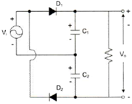
- 반파정류회로
- 전파정류회로
- 브릿지정류회로
- 배압정류회로
(정답률: 77%)
4. L형 필터에 비해 π형 필터에 대한 특징으로 틀린 것은?
- 직류 출력 전압이 높다.
- 역전압이 높다.
- 맥동률이 높다.
- 전압 변동률이 높다.
(정답률: 59%)
5. 다음 중 캐스코드 증폭기에 대한 설명으로 틀린 것은?
- 입력단에 공통베이스, 출력단에 공통이미터로 구성된 증폭기이다.
- 전압 궤환율이 매우 적다.
- 공통베이스 증폭기로 인해 고주파 특성이 양호하다.
- 자기 발진 가능성이 매우 적다.
(정답률: 68%)
6. 다음 중 버퍼(Buffer) 증폭기에 사용하기 가장 적합한 것은?
- 공통베이스 증폭기
- 공통이미터 증폭기
- 공통컬렉터 증폭기
- 캐스코드 증폭기
(정답률: 58%)
7. 이상적으로 CMRR값이 무한대인 차동증폭기 회로에서 발생하는 잡음은 출력단자에 어떻게 나타나는가?
- 발생한 잡음의 크기가 그대로 나타난다.
- 발생한 잡음이 증폭되어 출력에 나타난다.
- 발생한 잡음의 크기보다 작게 나타난다.
- 발생한 잡음은 출력단자에 나타나지 않는다.
(정답률: 62%)
8. 다음 그림은 콜피츠 발진회로를 변형한 클랩 발진회로이다. 안정한 주파수를 얻기 위해 C1, C2를 C3에 비해 크게 하였을 때, 이 발진회로의 발진주파수는? (단, C3=0.001[μF], L=1[mH])
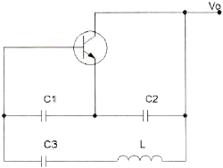
- 150[kHz]
- 153[kHz]
- 156[kHz]
- 159[kHz]
(정답률: 59%)
9. 발진회로의 출력이 직접 부하와 결합되면 부하의 변동으로 인하여 발진주파수가 변동된다. 이에 대한 대책으로 많이 사용하는 방법은?
- 정전압 회로를 사용한다.
- 발진회로와 부하 사이에 증폭기를 접속한다.
- 발진회로를 온도가 일정한 곳에 둔다.
- 타 회로와 차단하여 습기가 차지 않도록 한다.
(정답률: 69%)
10. 8진 PSK 신호에 5,000[Hz]의 대역폭이 주어졌을 때 비트율은?
- 40[kbps]
- 15[kbps]
- 5[kbps]
- 625[kbps]
(정답률: 47%)
11. BPSK 변조방식의 에러 확률은 QPSK 변조방식의 에러 확률의 몇 배인가?
- 1/2배
- 1/4배
- 2배
- 4배
(정답률: 67%)
12. 일정시간 동안 200개의 비트가 전송되고, 전송된 비트 중 15개의 비트에 오류가 발생하면 비트 에러율(BER)은?
- 7.5[%]
- 15[%]
- 30[%]
- 40.5[%]
(정답률: 84%)
13. 그림과 같은 회로에서 정현파 입력을 가했을 때 얻을 수 있는 출력 파형은?
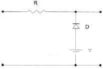
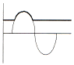
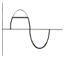
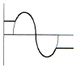
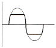
.
(정답률: 75%)
14. 정보기입 방식 중 "1" 또는 "0"을 기억한 후 반드시 0레벨로 돌아가는 방식은?
- RB 방식
- 위상변조 방식
- RZ 방식
- NRZ 방식
(정답률: 72%)
15. J-K 플립플롭을 이용하여 J와 K 입력 사이를 NOT 게이트로 연결한 플립플롭은?
- D형 플립플롭
- T형 플립플롭
- RST형 플립플롭
- RS 플립플롭
(정답률: 63%)
16. 비동기 counter와 관계없는 것은?
- 전단의 출력이 다음 단의 trigger 입력이 된다.
- 회로가 단순하므로 설계가 쉽다.
- ripple counter라고도 한다.
- 속도가 빠르다.
(정답률: 68%)
17. 3개의 T 플립플롭이 직렬로 연결되어 있다. 입력단(첫단)에 1000[Hz]의 입력신호를 인가하면 마지막 플립플롭의 출력신호는 몇 [Hz] 인가?
- 3000
- 333
- 167
- 125
(정답률: 62%)
18. 다음은 어떤 논리 회로인가?
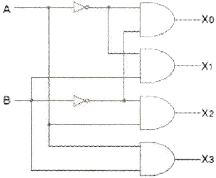
- 인코더
- 디코더
- RS 플립플롭
- JK 플립플롭
(정답률: 80%)
19. 다음 중 보수 발생기가 필요한 회로는?
- 일치 회로
- 가산 회로
- 나눗셈 회로
- 곱셈 회로
(정답률: 77%)
20. 그림과 같은 회로는?
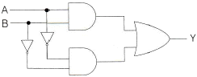
- 일치 회로
- 비교 회로
- 반일치 회로
- 다수결 회로
(정답률: 77%)
2과목: 무선통신 기기
21. DSB 방식에 비하여 SSB 방식의 장점 중 틀린 것은?
- 송신기의 소비전력이 약 30[%] 정도 줄어든다.
- 선택성 페이딩의 영향이 6[dB] 정도 개선된다.
- SNR 개선이 첨두 전력이 같을 때 약 12[dB] 정도 개선된다.
- 대역폭이 축소되어 주파수 이용률이 개선된다.
(정답률: 85%)
22. 주파수가 50[kHz]인 정현파 신호를 100[MHz]의 반송파로써 주파수 변조하여 최대 주파수 편이가 500[kHz]가 되었다고 하자. 발생된 FM 신호의 대역폭과 FM 변조지수를 구하라.(오류 신고가 접수된 문제입니다. 반드시 정답과 해설을 확인하시기 바랍니다.)
- 1000[kHz], 10
- 1200[kHz], 15
- 1500[kHz], 20
- 1800[kHz], 20
(정답률: 72%)
23. OFDM의 장점이 아닌 것은?
- OFDM은 다수 반송파를 사용하므로, 주파수 오프셋과 위상잡음에 강인하다.
- OFDM은 협대역 간섭이 일부 부반송파에만 영향을 주므로 협대역 간섭에 강하다.
- OFDM은 다중경로에 대해 효율적으로 대처할 수 있다.
- OFDM은 시변채널에 대해 부반송파에 대한 데이터 전송률을 적응적으로 조절할 수 있어 전송용량을 크게 향상시킬 수 있다.
(정답률: 53%)
24. 다음은 64QAM의 블록도를 나타낸다. 괄호안에 들어가는 내용으로 적합한 것은?
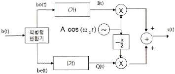
- 2-to-4 레벨변환기
- 3-to-8 레벨변환기
- 4-to-16 레벨변환기
- 5-to-32 레벨변환기
(정답률: 76%)
25. 다음 중 납 축전지에 대한 설며응로 잘못된 것은?
- 납 축전지의 단자 전압은 전해액의 비중, 온도 등에 의해 변화한다.
- 겨울철에는 묽은 황산의 비중을 높인다.
- 내부저항은 극판, 전해액, 격리판, 접속선 등의 저항값 합으로 이루어진다.
- 온도가 일정하다면 충전 시간이 길어져 내부저항이 높아진다.
(정답률: 69%)
26. 다음 중 충전시 주의사항으로 잘못된 것은?
- 충전은 규정전류(또는 전압)로 규정시간에 할 것
- 너무 과도한 충전이나 불충분한 충전을 하지말 것
- 충전으로 온도가 조금씩 상승하므로 40~60도 이내로 유지할 것
- 충전에 의해 확산한 회유산의 분말을 제거할 것
(정답률: 86%)
27. 충전 종료시 축전지의 상태로 올바른 것은?
- 전해액의 비중이 낮아진다.
- 단자 전압이 하강한다.
- 가스(물거품)가 많이 발생한다.
- 전해액의 온도가 낮아진다.
(정답률: 81%)
28. 다음 중 UPS의 구성요소에 속하지 않는 것은?
- 출력필터부
- 증폭부
- 비상바이패스부
- static 스위치부
(정답률: 80%)
29. 다음 중 무정전 전원장치(UPS)에 관한 설명으로 가장 올바른 것은?
- 정전이 존재하지 않는 전원공급 장치이다.
- 교류를 직류로 변환시켜 주는 장치이다.
- 고전압을 저전압으로 변환시켜 주는 장비이다.
- 직류를 교류로 변환시켜주는 장비이다.
(정답률: 85%)
30. 전원회로에서 요구하는 일반적인 성능요구조건으로 부적합한 것은?
- 충분한 전력용량을 가질 것
- 출력 임피던스가 높을 것
- 전압이 안정할 것
- 리플이나 잡음이 적을 것
(정답률: 80%)
31. 평활회로에 대한 설명 중 가장 적합한 것은?
- 직류를 직류로 변환하는 역할을 한다.
- 맥동성분을 제거하여 직류분만을 얻기 위한 회로이다.
- 일정한 직류 출력 전압을 유지하도록 한다.
- 직류를 교류로 변환하는 역할을 한다.
(정답률: 72%)
32. 단상 전파 브리지 정류회로에서 각 다이오드에 걸리는 최대 역전압의 크기는? (단, 1차측 입력전압 100[V], 트랜스포머의 권선비는 n1:n2=10:1)
- 10[V]
- 14.1[V]
- 100[V]
- 141[V]
(정답률: 77%)
33. 전력측정에 사용되는 볼로메터(bolometer) 브리지법에 대해 잘못 설명한 것은?
- 볼로메터 소자란 전력을 흡수하면 온도가 변화하여 전기저항이 변하는 소자이다.
- 볼로메터 브리지법을 사용하면 주파수에 따른 측정오차가 발생한다.
- FM 송신기의 전력 측정방법으로 사용된다.
- 볼로메터 소자로는 써미스터나 바레터(barreter)가 있다.
(정답률: 50%)
34. 공중선 전류계법을 사용하여 변조도를 측정하고자 한다. 무변조시 반송파 전류(Ic)는 2[A]이고, 변조시 피변조파 전류(Im)가 2.2[A]일 때 변조도는 약 몇 [%] 인가?
- 52[%]
- 65[%]
- 72[%]
- 85[%]
(정답률: 55%)
35. 오실로스코프의 수평축 단자에 500[Hz] 신호를, 수직축 단자에 피측정 신호를 인가했을 때 오실로스코프에 타원 모양의 리사주 도형이 나타났다. 이 리사주 도형이 가로선과 만나는 최대 접점수를 2개, 세로선과 만나는 최대 접전수를 2개라 할 때 피측정 신호의 주파수는 몇 [Hz] 인가?
- 125[Hz]
- 500[Hz]
- 1000[Hz]
- 2000[Hz]
(정답률: 40%)
36. 다음 중 방향성 결합기를 이용하여 측정할 수 없는 것은?
- 반사계수
- 정재파비
- 주파수
- 결합도
(정답률: 45%)
37. 오실로스코프의 수평축과 수직축 입력에 진폭과 주파수가 같고 위상차가 90도인 전압을 가했을 때, 오실로스코프에 나타나는 리사주 도형의 모양은?
- 점
- 사선
- 타원
- 원
(정답률: 62%)
38. 정재파비를 S라 할 때, 전압 반사계수는 어떤 식으로 구할 수 있는가?
- S
- S2
- (S-1)/(S+1)
- (S+1)/(S-1)
(정답률: 70%)
39. 이동통신 단말기의 수신전력이 0.004[μW]일 때 이를 dBm으로 나타내면 몇 [dBm]이 되는가? (단, 1[mW]를 0[dBm]으로 한다.)
- -44[dBm]
- -54[dBm]
- -64[dBm]
- -74[dBm]
(정답률: 57%)
40. 이동통신에서 사용되는 디지털 변조방식 중에서 에러발생확률 측정시 그 값이 가장 낮은 방식은? (단, 진수는 같은 경우이다.)
- ASK
- FSK
- PSK
- QAM
(정답률: 77%)
3과목: 안테나 공학
41. 다음은 횡전자파(TEM : Transverse Electromagnetic wave)에 대한 설명이다. 바르게 설명한 것은 어느 것인가?
- 전파 진행방향에 전계성분만 존재하고, 자계성분은 존재하지 않는다.
- 전파 진행방향에 자계성분만 존재하고, 전계성분은 존재하지 않는다.
- 전파 진행방향에 전계, 자계성분은 모두 존재하지 않는다.
- 전파 진행방향에 전계, 자계성분이 모두 존재한다.
(정답률: 65%)
42. 유전체에서 변위전류를 발생하는 것은?
- 분극 전하밀도의 시간적 변화
- 분극 전하밀도의 공간적 변화
- 전속밀도의 시간적 변화
- 전속밀도의 공간적 변화
(정답률: 74%)
43. 스미스 도표에서 그림과 같이 동심원 A에서 동심원 B로 원의 반지름이 커졌을 때 설명이 옳지 않은 것은?
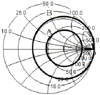
- 반사계수의 크기가 커진다.
- 전송전력이 작아진다.
- 반사파의 크기가 작아진다.
- 부하 임피던스와 소스 임피던스 차이값이 커진다.
(정답률: 62%)
44. 동조 급전선과 비동조 급전선의 설명 중 옳지 않은 것은?
- 정재파가 분포되어 있는 급전선을 동조 급전선이라 한다.
- 비동조 급전선은 동조 급전선보다 전력의 손실이 적다.
- 동조 급전선은 거리가 짧은 때, 비동조 급전선은 길 때 사용한다.
- 비동조 급전선은 정합장치가 불필요하다.
(정답률: 79%)
45. 복사저항 450[Ω]인 두 개의 안테나를 λ/4 임피던스 변환기를 사용하여 100[λ]의 평행 2선식 급전선에 정합시키고자 한다. 이 때 변환기의 임피던스 값은?
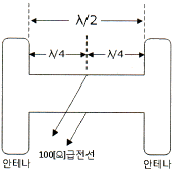
- 212[Ω]
- 424[Ω]
- 300[Ω]
- 600[Ω]
(정답률: 60%)
46. 다음 중 진행파와 반사파가 있는 급전선은?
- 반사계수가 1인 급전선
- 정규화 부하 임피던스가 1인 급전선
- VSWR=1인 급전선
- 무한장 급전선
(정답률: 67%)
47. 도파관의 임피던스 정합 방법으로 적합하지 않은 것은?
- Stub에 의한 정합
- 도파관 창에 의한 정합
- 커플러에 의한 정합
- Q 변성기에 의한 정합
(정답률: 64%)
48. 반치각이란 주엽의 최대 복사 강도(방향)에 대해 몇 [dB]가 되는 두 방향 사이의 각을 말하는가?
- 0[dB]
- -3[dB]
- -6[dB]
- -12[dB]
(정답률: 80%)
49. 기저부에 콘덴서를 삽입하는 이유는?
- 고유주파수보다 높은 주파수에 공진시킨다.
- 고유주파수보다 낮은 주파수에 공진시킨다.
- 접지저항을 감소시키기 위하여 사용한다.
- 접지저항을 증가시키기 위하여 사용한다.
(정답률: 60%)
50. 자유공간에 반파장 더블렛 안테나 있다. 이 안테나의 복사전력이 900[W]일 때 최대복사 방향으로 5[km] 떨어진 점의 전계강도는 몇 [V/m] 인가?
- 0.04
- 0.⑤
- 0.5
- 0.4
(정답률: 43%)
51. 야기안테나의 소자 중 가장 긴 소자의 역할과 리액턴스 성분은 무엇인가?
- 복사기, 용량성
- 지향기, 유도성
- 반사기, 유도성
- 도파기, 용량성
(정답률: 69%)
52. 다음 중 절대이득을 측정할 수 있는 표준형 안테나로 사용할 수 있는 안테나는?
- 혼(Horn) 안테나
- 웨이브(Wave) 안테나
- 루프 안테나
- 롬빅 안테나
(정답률: 69%)
53. 마이크로파 대역에서 주로 사용하는 지상파는?
- 지표파
- 직접파
- 대지 반사파
- 회절파
(정답률: 67%)
54. 지표파에 대한 설명 중 틀린 것은?
- 대지의 도전율과 유전율이 작을수록 감쇠가 적다.
- 주파수가 낮을수록 멀리 전파한다.
- 사막지대보다 해안지역에서 멀리 전파한다.
- 수평편파보다 수직편파에서 감쇠가 적다.
(정답률: 68%)
55. 대류권 산란파에 대한 설명으로 틀린 것은?
- 전파 경로상의 지형에 대한 영향을 받지 않는다.
- 공간 다이버시티를 이용하면 대류권 산란에 의한 페이딩을 방지할 수 있다.
- 짧은 주기를 갖는 페이딩이 발생한다.
- 전파손실이 자유공간 손실과 유사한 값을 갖는다.
(정답률: 42%)
56. 다음 중 극초단파(UHF)의 통달거리에 그다지 많은 영향을 주지 않는 것은?
- 공전
- 지형
- 복사전력
- 안테나 높이
(정답률: 56%)
57. 다음 중 어느 지점의 임계주파수가 5[MHz]일 때 사용주파수가 8[MHz]에 대한 도약거리는 어느 것인가? (단, F층의 높이를 400[km], 대지는 평면으로 본다.)
- 약 999[km]
- 약 900[km]
- 약 899[km]
- 약 799[km]
(정답률: 50%)
58. 대류권에서의 페이딩(fading)은?
- 도약성 페이딩
- 편파성 페이딩
- 산란성 페이딩
- 흡수성 페이딩
(정답률: 64%)
59. 빠른 속도로 움직이는 물체에서 발사하는 전파를 수신하면 원래 발사된 주파수와 다른 주파수의 신호가 수신된다. 이러한 현상을 무엇이라 하는가?
- 도플러 효과
- 패러데이 회전
- 룩셈부르크 효과
- 델린저 현상
(정답률: 65%)
60. 모든 스펙트럼 영역에 균일하게 퍼져있는 연속성 잡음은?
- 인공잡음
- 대기잡음
- 백색잡음
- 우주잡음
(정답률: 78%)
4과목: 무선통신 시스템
61. 다음은 변조(modulation)에 관련된 설명들이다. 잘못된 것은?
- 변조란 정보(변조)신호에 따라 반송파의 진폭 또는 주파수 또는 위상을 변화시켜 전송하는 것을 말한다.
- 변조는 장거리 통신을 수행하기 위해 실시한다.
- 변조란 정보(변조)신호의 스펙트럼을 낮은 주파수 쪽으로 옮기는 조작을 말한다.
- 변조가 끝난 파를 피변조파라 하며 이를 증폭하기 위해 전력증폭기를 사용한다.
(정답률: 60%)
62. 무선송신기의 발진부와 완충증폭기의 결합은 어떤 방식이 적합한가?
- 소결합 방식
- 임계결합 방식
- 밀결합 방식
- 공진결합 방식
(정답률: 52%)
63. 다음은 IEEE 권장 마이크로웨이브 주파수밴드 구분을 열거할 것이다. 주파수가 낮은 것에서 높은 순서대로 열거된 것은?
- C - L - S - K
- C - K - L - S
- L - S - K - C
- L - S - C - K
(정답률: 69%)
64. 다음 중 위성체의 트랜스폰더(transponder)를 구성하는 요소가 아닌 것은?
- 입력필터
- 추미장치
- 저잡음증폭기
- 고전력증폭기
(정답률: 62%)
65. 위성체의 구성요소로서 "payload system"과 "bus sub-system"이 있다. 다음 중 bus sub-system의 구성요소가 아닌 것은?
- 트랜스폰더
- TTC계
- AOCS계
- 추진계
(정답률: 52%)
66. 위성의 위치 및 속도를 이용하여 사용자의 위치 속도 및 시간을 계산할 수 있도록 해주는 무선항법 시스템은?
- GPS(Global Positioning System)
- VSAT(Very Small Aperture Terminal)
- IMARSAT(International Marine Satellite)
- DBS(Direct Broadcasting System)
(정답률: 82%)
67. 대역확산통신에서 처리이득이 30[dB]라면 전송시 확산된 신호의 대역폭이 원래 신호의 대역폭보다 몇 배 넓어졌음을 의미하는가?
- 10배
- 100배
- 1,000배
- 10,000배
(정답률: 70%)
68. IS-95 CDMA 이동통신 시스템에서 역방향에서의 변조방식은?
- FSK
- GMSK
- QPSK
- OQPSK
(정답률: 75%)
69. 통신서비스 중에서 정지 및 이동 중에도 언제, 어디서나 고속으로 무선 인터넷 접속이 가능한 휴대인터넷서비스는?
- WiBro
- DMB
- 텔레매틱스
- VOIP
(정답률: 78%)
70. 다음 중 IEEE 802.11a 기술에 대한 설명으로 적절한 것은 무엇인가?
- 2.4GHz ISM(Industrial Scientific and Medical) 대역을 사용한다.
- OFDM 기술을 사용한다.
- TDMA/TDD 기술을 사용한다.
- 최대 22[Mbps] 전송속도를 지원한다.
(정답률: 54%)
71. 통신 프로토콜의 일반적인 기능 중 계층의 프로토콜에 적합한 데이터 블록으로 만들고, 통신국의 주소 등을 담고 있는 헤더를 부착하는 기능은?
- 캡슐화
- 다중화
- 세분화
- 동기화
(정답률: 77%)
72. 다음 규격 중 OSI 참조모델의 네트워크 계층과 관계가 가장 적은 것은?
- IP
- MTP
- X.21
- Q.931
(정답률: 60%)
73. CSMA/CD 기술과 CSMA/CA 기술에 대한 다음 설명 중 맞지 않은 것은?
- CSMA/CD는 IEEE802.3의 MAC에 적용된 기법이다.
- CSMA/CA는 IEEE802.11의 MAC에 적용된 기법이다.
- CSMA/CD와 CSMA/CA 모두 송신 전에 매체를 확인한다.
- CSMA/CD에서는 명시적인 ACK 패킷을 이용해 충돌회피를 시도한다.
(정답률: 56%)
74. 마스터 스테이션으로부터 슬레이브 스테이션에게 전송할 데이터가 있는지 물어보는 방식은 다음 중 어느 것인가?
- Contention
- Polling
- Selection
- Detection
(정답률: 74%)
75. 어떤 컴퓨터가 203.241.250.11의 IP 주소를 가진다고 할 때, 이 IP 주소의 클래스는?
- 클래스 A
- 클래스 B
- 클래스 C
- 클래스 D
(정답률: 65%)
76. 다음 중 Mobile IP의 Discovery 능력을 지원해주는 프로토콜은?
- ICMP
- BGP
- OSPF
- UDP
(정답률: 55%)
77. 위성통신시스템을 설계하는데 고려하여야 할 사항이 아닌 것은?
- 위성월식 상황을 고려하여야 한다.
- 먼 거리이므로 전송지연을 고려하여야 한다.
- 잡음 및 간섭상태를 고려하여야 한다.
- 전파의 손실상태를 고려하여야 한다.
(정답률: 70%)
78. 시스템에서 장애(fault)에 대처하는 단계를 아래에 나타내었다. 빈 칸에 적당한 것은?
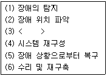
- 장애의 제거
- 장애의 보류
- 장애의 격리
- 장애의 분류
(정답률: 65%)
79. 다음 중 무선통신 네트워크의 유지보수에서 쓰이는 용어인 SINAD와 거리가 먼 것은?
- Signal to Noise And Distortion의 약어이다.
- 무선통신 기지국의 기본적인 측정항목이다.
- SINAD를 측정하기 위해서 별도의 신호 발생기와 SINAD 계측기가 있어야 한다.
- 음성의 압축률을 측정할 때 이용되는 방법이다.
(정답률: 59%)
80. 스펙트럼 분석기(spectrum analyzer)의 용도로서 맞지 않는 것은?
- 변조의 직선성 측정
- 안테나의 pattern 측정
- RF 간섭 시험
- FM 편차 측정
(정답률: 49%)
5과목: 전자계산기 일반 및 무선설비기준
81. 다음의 슈퍼스칼라(superscalar) 방식을 제약하는 사항들 중 레지스터 재명명(register renaming)에 의하여 해결할 수 있는 것은 어느 것인가?
- 데이터 의존성(true data dependency)
- 프로시듀어 의존성(procedure dependency)
- 자원 충돌(resource conflicts)
- 출력 의존성(output dependency)
(정답률: 37%)
82. 상대 주소지정(relative addressing)에서 사용하는 레지스터는 무엇인가?
- 일반 레지스터(general register)
- 색인 레지스터(index register)
- 프로그램 계수기(program counter)
- 메모리 주소 레지스터(memory address register)
(정답률: 54%)
83. 교무실에 1학년 1반 학생들의 학적부가 있다. 이 안에는 학생별 신상 기록카드가 있으며, 상기록카드에는 학생이름, 주소, 부모의 인적사항을 적도록 되어 있다. 여기에서 정보의 단위 중 레코드에 해당하는 것은 무엇인가?
- 학적부
- 신상기록카드
- 학생이름
- 부모의 인적사항
(정답률: 73%)
84. 프로그램에서 함수들을 호출하였을 때, 복귀주소(return address)들을 보관하는데 사용하는 자료구조는 어느 것인가?
- 스택(stack)
- 큐(queue)
- 트리(tree)
- 그래프(graph)
(정답률: 72%)
85. 하나의 컴퓨터에서 한 시점에 한 개 이상의 프로세스들을 효율적으로 지원하는 운영체제의 기능은 무엇인가?
- 다중프로그래밍(multiprogramming)
- 다중프로세싱(multiprocessing)
- 다중테스킹(multitasking)
- 다중스레딩(multithreading)
(정답률: 56%)
86. 최근 운영체제들은 다양한 기능들을 포함하고, 보다 사용자의 편의성을 고려한 GUI가 개발되고 있다. 그리고 컴퓨터 시스템의 운영에 필요한 자원관리기능을 향상시키는 데에도 많은 연구가 진행되고 있다. 이와 같은 운영체제의 자원관리 기능에 속하지 않는 것은?
- 메모리
- CPU
- 주변장치
- 데이터
(정답률: 69%)
87. 다음 중 운영체제에 대한 특징이 틀린 것은?
- 유닉스(Unix) : 네트워크 기능이 강력하며, 다중 사용자 지원이 가능하고, PC에서도 설치 및 운용이 가능한 버전이 있다.
- 리눅스(Linux) : 무료로 다운받아 모든 분야에 무료로 널리 사용할 수 있으며, 윈도우즈와 동일한 환경을 제공한다.
- 윈도우즈(Windows) : 소스가 공개되어 있지 않으며, 많은 사용자들이 보편적으로 사용하고 있다. 서버급보다는 클라이언트 용으로 주로 사용되고 있다.
- 도스(DOS) : 명령어 입력방식으로 불편하며, DOS 지원을 위해 메모리와 디스크의 용량에 한계가 있다. 여러 사람이 작업을 할 수 없다.
(정답률: 81%)
88. 다음 지문의 내용에 해당하는 프로세스 스케줄링 기법은?
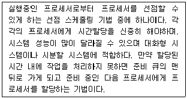
- HRN(High Response ratio Next Scheduling)
- SRT(Shortest Remaining Time Scheduling)
- SPN(Shortest Process Next Scheduling)
- RR(Round Robin Scheduling)
(정답률: 56%)
89. 저작자(개발자)에 의해 무상으로 배포되는 컴퓨터 프로그램으로 개인이나 열광자(enthusiast)가 자기의 작품에 대해 동호인들의 평가를 받기 위해서 또는 개인적 만족감을 얻기 위해서 사용자 집단(user group), PC 통신망의 전자 게시판이나 공개 자료실, 인터넷의 유즈넷(Usenet) 등을 통해 배포하는 소프트웨어는?
- 프리웨어
- 공개 소프트웨어(PDS)
- 쉐어웨어
- 번들
(정답률: 66%)
90. 다음 지문의 괄호 안에 들어갈 용어를 올바르게 나열하고 있는 것은?
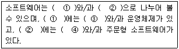
- ① 응용소프트웨어, ② 시스템소프트웨어 ③ 유틸리티, ④ 패키지
- ① 시스템소프트웨어, ② 응용소프트웨어 ③ 유틸리티, ④ 패키지
- ① 시스템응용소프트웨어, ② 유틸리티 ③ 응용소프트웨어, ④ 패키지
- ① 응용소프트웨어, ② 시스템소프트웨어 ③ 패키지, ④ 유틸리티
(정답률: 79%)
91. 다음 중 주파수분배의 고려사항이 아닌 것은?
- 국방ㆍ치안 및 조난구조 등 국가안보ㆍ질서유지 또는 인명안전의 필요성
- 주파수의 이용현황 등 국내의 주파수 이용여건
- 전파를 이용하는 서비스에 대한 수요
- 과거의 주파수 이용 동향
(정답률: 75%)
92. 무선국은 허가증에 기재된 사항의 범위 내에서 운용하여야 한다. 다음 중 예외적으로 허용되는 통신이 아닌 것은?
- 조난통신
- 긴급통신
- 안정통신
- 제3자에 의한 통신
(정답률: 78%)
93. 무선설비의 기기를 제작 또는 수입하고자 하는 자는 형식검정이나 형식등록을 받아야 한다. 다음 예외 사항 중 해당되지 않는 경우를 고르시오.
- 시험용
- 연구용
- 판매용
- 수출용
(정답률: 49%)
94. 방송통신위원회가 행정처분을 할 경우 청문의 실시 대상이 아닌 것은?
- 무선국 개설허가의 취소
- 형식검정의 합격 또는 형식등록의 취소
- 기술자격의 취소
- 무선국 준공검사의 취소
(정답률: 49%)
95. 형식검정 대상기기가 아닌 것은?
- 비상위치지시용 무선표지설비
- 위성비상위치지시용 무선표지설비의 기기
- 수색구조용 레이더트랜스폰더의 기기
- 가입자회선용 무선설비의 기기
(정답률: 61%)
96. 형식검정 및 형식등록기기의 사후관리 시험과 거리가 먼 것은?
- 부차적 전파발사 강도
- 주파수
- 스퓨리어스 발사 강도
- 점유주파수 대역폭
(정답률: 23%)
97. 방송통신기기의 사후관리에서 인증사항에 대한 이행여부를 확인하는 사항과 가장 거리가 먼 것은?
- 인증 받은 기기의 구조ㆍ설계ㆍ형식 등이 임의로 변경되었는지의 여부
- 변경 신고한 기기의 적합성 여부
- 관계 규정의 이행여부
- 지식경제부 소관 규정과의 적합성 여부
(정답률: 59%)
98. 방송통신기기의 인증신청에 대항 처리기간으로 옳은 것은?
- 5일
- 7일
- 10일
- 15일
(정답률: 53%)
99. 방송통신기기 지정시험기관이 발행한 시험성적서의 기재사항이 아닌 것을 고르시오.
- 시험신청인의 성명 및 주소
- 성적서 발급번호 및 페이지 일련번호
- 시험결과에 대한 담당 시험원의 의견
- 품질책임자의 의견 및 서명
(정답률: 66%)
100. 무선설비규칙에서 정의한 “불요발사”로서 적절한 답을 고르시오.
- 대역외발사 및 스퓨리어스 발사
- 대역내발사를 말한다.
- 필요주파수대폭의 바로 안쪽 발사 에너지
- 스퓨리어스 발사 및 저감반송파
(정답률: 79%)